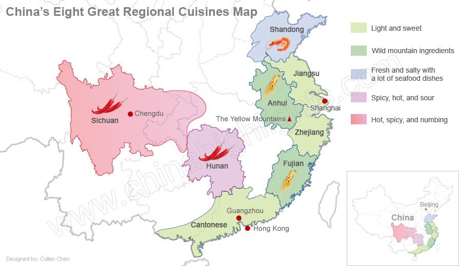

Chinese Food Series Map
Tea

Click Map to original page for detail information
Main Series
The following in no particular order.
-
Guangdong/Cantonese Cuisine
Sweeter, favoring braising and stewing, adding various mild sauces
-
Sichuan Cuisine
Spicy and bold, often mouth-numbing, using lots of chili, garlic, ginger, and peanuts
-
Jiangsu Cuisine
Fresh, moderately salty and sweet, precise cooking techniques, favoring seafood, soups and artistic, colorful
presentation
-
Zhejiang Cuisine
Mellow, using fresh seafood, freshwater fish, and bamboo shoots, and a wide variety of cooking methods.
-
Fujian/Min Cuisine<
Lighter, with a mild sweet and sour taste, using ingredients from the sea and the mountains.
-
Hunan Cuisine
Quite spicy, with a hot and sour taste, favoring sautéing, stir-frying, steaming and smoking.
-
Anhui Cuisine
Uses many wild plants and animals as ingredients, favoring stewing and more oil.
-
Shandong Cuisine
Salty and crispy, favoring braising and seafood.